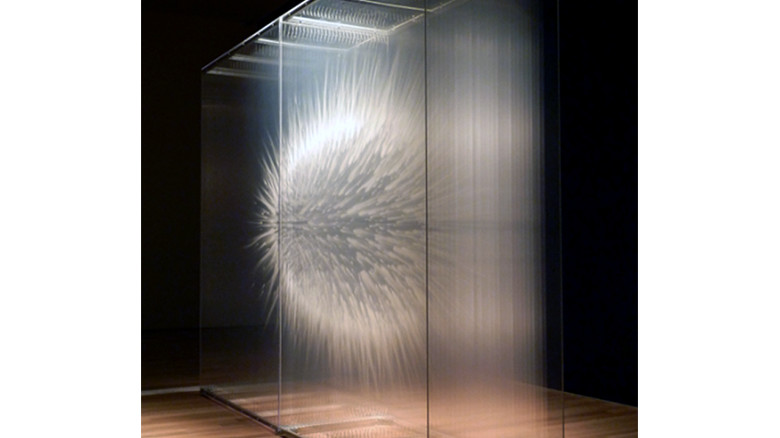

minimal

David Spriggs
http://www.davidspriggs.com/vision/-どんな人
カナダで活動しているアーティストです。巨大なインスタレーション作品を多く制作しています。
-解説
今までの紹介でなんども出てきたアクリルの積層による作品です。何かが爆発したようなイメージを表現しています。一枚一枚板を塗りながら積層させることで、爆発の一瞬が中に閉じ込められているような印象を作っています。
-好きなところ
形自体の動感と透明感が好きです。ライティングでアクリルのつなぎ目を目立たせないように見せているところもうまいなと思いました。